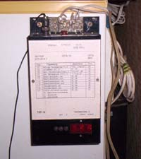
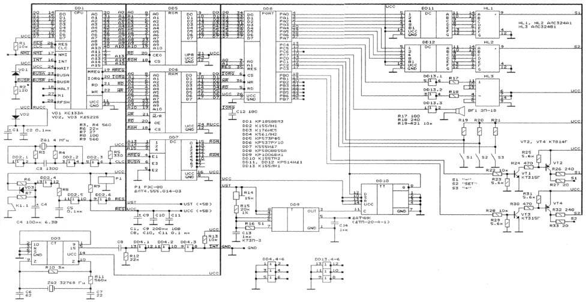
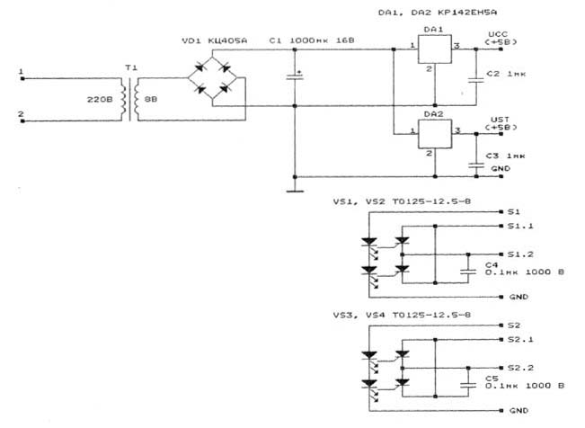
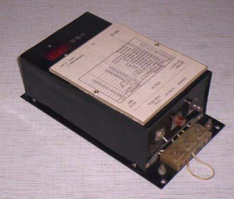
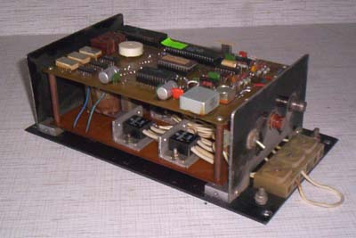
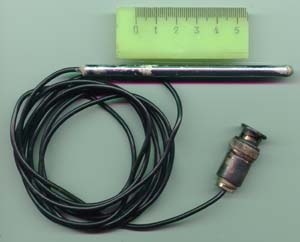

Контроллер холодильной установки (рефрижератора)

Контроллер холодильной установки (рефрижератора) предназначен для автоматического управления холодильной установкой. В частности, он обеспечивает безопасный запуск компрессора установки, регулировку температуры холодильной камеры с заданным гистерезисом, включение режима оттайки холодильной камеры, контроль температурных и временных параметров, отключение компрессора при возникновении опасных температурных режимов и при обрыве датчика температуры, а также позволяет оперативно устанавливать необходимые режимы эксплуатации с помощью клавиатуры на передней панели.
Технические характеристики:
Конструкция контроллера
Схема контроллера холодильной установки приведена на рис. 1 (микропроцессор, ПЗУ, ОЗУ, устройства ввода-вывода, электронный преобразователь датчика температуры) и 2 (блок питания и ключи управления).

Рис. 1. Схема электрическая принципиальная микропроцессорного блока [2] и устройств ввода-вывода.
В качестве микропроцессора DD1 использована микросхема КР1858ВМ3 ( Z80A). Задающий генератор частотой 4 МГц выполнен на элементах DD2.1 и DD2.2 (К155ЛН1). На микросхеме DD3 (К176ИЕ5) построен узел отсчета времени. Программа работы микропроцессора размещена в ПЗУ DD5 (КР573РФ5). Микросхема DD6 (КР537РУ10) выполняет роль ОЗУ. Микросхема DD8 (КР580ВВ55А) служит в качестве порта ввода-вывода. Узел на микросхемах DD9 (КР1006ВИ1) и DD10 (К155ТМ2) является электронным преобразователем датчика температуры. Устройство индикации собрано на дешифраторах DD11, DD12 (КР514ИД1) и светодиодных индикаторах HL1 - HL3 (АЛС324А1, АЛС324В1). Для звуковой индикации используется пьезоизлучатель BF1 (ЗП-18). С помощью кнопок S1 - S3 можно задавать режимы работы контроллера и изменять установку параметров регулировки. Узлы на транзисторах VT1 - VT4 обеспечивают необходимые значения тока управления выходными ключами.

Рис. 2. Схема электрическая принципиальная блока питания и ключей управления контроллера температуры.
Блок питания построен по схеме: понижающий трансформатор T1 (220/8 вольт) - диодный мост VD1 (КЦ405) - фильтрующий конденсатор C1. Линейный стабилизатор DA1 (КР142ЕН5А) обеспечивает напряжение питания +5 вольт, а DA2 (КР142ЕН5А) - опорное напряжение +5 вольт (для повышения точности измерения температуры). Ключи на оптронных тринисторах VS1, VS2 (ТО125-12.5-8) используются для включения компрессора (для маломощных однофазных компрессоров) или магнитного пускателя (для мощных однофазных и трехфазных компрессоров) и электромагнитного клапана в режиме оттайки.
Программа работы контроллера и побайтовое содержимое ПЗУ в файле: TCR10.rar (~8 Кбайт).
Модифицируя программу, записанную в ПЗУ, можно изменять функции контроллера по управлению холодильной установкой, а также применять контроллер для управления другими устройствами (печи, нагревательные устройства, регуляторы напряжения и т. д.), в которых требуется обеспечить заданную временную зависимость некоторого параметра.
Электронные узлы контроллера холодильной установки смонтированы на двух печатных платах, расположенных в стойке в металлическом корпусе, который закрывается сверху кожухом. Снаружи на корпусе смонтированы органы управления и подключения. Внешний вид контроллера и вид на монтаж со снятым кожухом показаны на рис. 3 и 4.

Рис. 3. Внешний вид контроллера холодильной установки.

Рис. 4. Вид контроллера холодильной установки со снятым кожухом.
Датчик температуры
В качестве датчика температуры применен полупроводниковый датчик, вмонтированный в никелированную медную трубку и залитый эпоксидной смолой. Трубка используется в качестве электромагнитного экрана, а также защищает датчик от механических воздействий. Внешний вид датчика температуры показан на рис. 5. Размеры датчика: диаметр 6 мм, длина 100 мм; длина кабеля подключения 2 м (может быть до 10 м).

Рис. 5. Внешний вид датчика температуры.
Состояние разработки:
Контроллер холодильной установки в течение нескольких лет используется в лабораторных условиях для проведения различных экспериментов, связанных с охлаждением, в частности, совместно с бытовым холодильником "Ока-IIIМ" в качестве рефрижератора. Контроллер включен в цепь питания компрессора вместо датчика температуры холодильника. Кроме того, он применяется при построении экспериментальных рефрижераторных систем в комплекте с компрессорным блоком [1].
Ссылки:
07.10.2005
17.04.2006
19.06.2010
28.04.2015
Альтернативные источники
энергии
Компьютеры и
Интернет
Магнитные поля
Механотронные системы
Перспективные
разработки
Электроника и технология